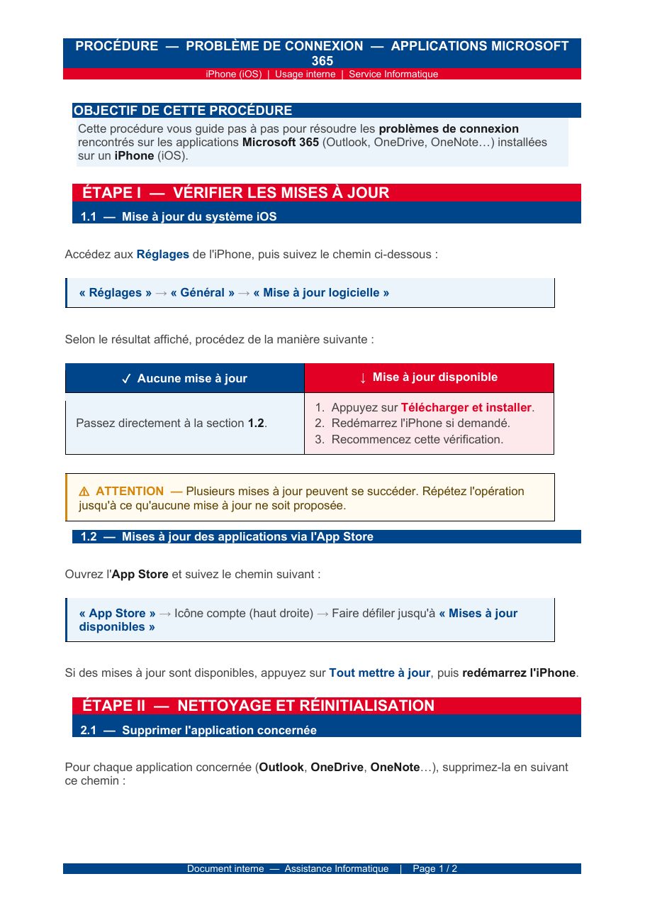
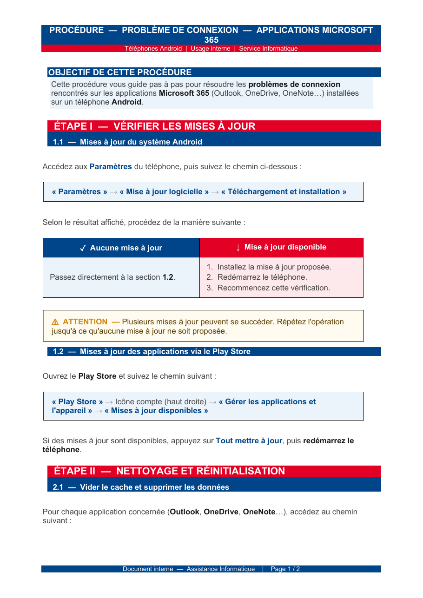

Contexte
Un nombre important d'utilisateurs de l'agence rencontrait des problèmes d'accès aux applications Microsoft 365 (Outlook, OneDrive, OneNote…) depuis leur smartphone professionnel. Le problème touchait à la fois les terminaux iOS et Android, générant un flux soutenu de tickets demandant une intervention répétitive du service informatique.
Plutôt que de traiter ces incidents un par un en répétant les mêmes étapes, j'ai été chargé de rédiger une procédure complète à destination des utilisateurs, leur permettant de résoudre eux-mêmes la grande majorité des cas.
Analyse du problème
L'analyse des tickets a permis d'identifier les causes les plus fréquentes :
- versions obsolètes du système d'exploitation ou des applications M365 ;
- caches et données applicatives corrompus à la suite de mises à jour ;
- comptes mal configurés ou en conflit avec d'autres comptes Microsoft personnels ;
- jetons d'authentification expirés non régénérés.
À partir de ces constats, j'ai structuré une procédure progressive permettant de cibler chacune des causes possibles, du plus simple (mise à jour) au plus impactant (suppression/réinstallation de l'application).
Procédures rédigées
Deux procédures distinctes ont été rédigées, en cohérence visuelle et structurelle, pour couvrir les deux principaux systèmes d'exploitation mobiles présents dans le parc :
Problème de connexion aux applications M365 sur iPhone
Procédure pas à pas couvrant la mise à jour iOS, la mise à jour des applications via l'App Store, la suppression et réinstallation des applications, et la gestion des comptes liés.
Ouvrir le PDF → PROCÉDURE · ANDROIDProblème de connexion aux applications M365 sur Android
Procédure pas à pas couvrant la mise à jour du système, la mise à jour Play Store, le vidage du cache et des données, et la gestion des comptes liés.
Ouvrir le PDF →

Chaque procédure suit la même logique en deux grandes étapes (vérification des mises à jour ; nettoyage et réinitialisation) avec une mise en forme claire : chemins d'accès en évidence, alertes encadrées sur les actions à risque (par exemple ne pas supprimer le « Compte professionnel ou scolaire ») et solution de repli explicite en cas d'échec.
Diffusion & usage
Les deux PDF ont été partagés via les canaux internes du service IT et sont désormais envoyés en réponse automatique aux tickets correspondant à ce périmètre. Cette automatisation permet :
- de réduire significativement le temps de traitement d'un ticket « accès M365 mobile » ;
- de rendre l'utilisateur autonome sur la résolution de cas simples ;
- de garder le service IT disponible pour les cas qui le justifient réellement.
Conclusion
La rédaction et la diffusion de ces deux procédures ont permis de résoudre la majorité des cas remontés sans intervention directe du support. Cette mission m'a sensibilisé à l'importance de la documentation dans un service informatique : au-delà du dépannage immédiat, une procédure bien rédigée capitalise l'expérience acquise et fait gagner du temps à l'ensemble du service sur le long terme.
Compétences validées
Cette situation valide les compétences suivantes du référentiel (Annexe 8-1) :